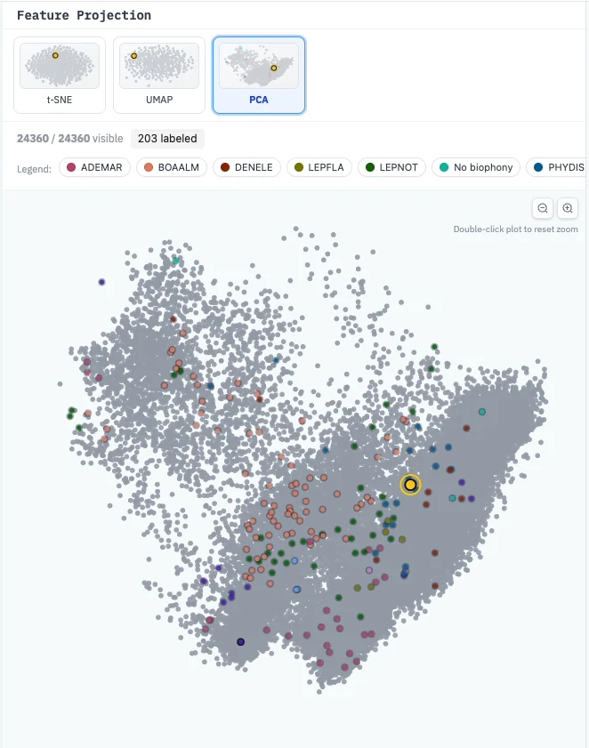

Embeddings
An embedding is a list of numbers that summarises what a clip sounds like. Clips that sound alike get similar numbers. YAPAT computes one embedding per 3-second clip, once, and uses them everywhere the model needs to compare sounds.
Why YAPAT needs them
- Active learning — the model is trained on embeddings, not on the raw audio.
- The projection — the map of all clips in the Annotation Hub places clips with similar embeddings close together.
This is why a dataset must have embeddings before it can be annotated.

The embedding model
YAPAT ships with BirdNET 2.4, a published neural network for recognising bird and other animal sounds. It listens in 3-second windows and produces 1,024 numbers per clip. The model decides the clip length, so every clip in a dataset is comparable.
Generating embeddings
An administrator clicks Generate Embeddings on the dataset card. The job runs in the background; when it finishes, the dataset is ready for the Annotation Hub. See Datasets.
- An embedding job produces a snippet set: the clips and their vectors for one model and window. A dataset is ready when its default snippet set has status
ready. POST /api/datasets/{id}/embeddingsstarts a job (HTTP 409 if the same one exists);GET /api/embeddings/{job_id}reports progress. Jobs run on theembeddingsCelery queue.- Vectors are stored in PostgreSQL with pgvector. See Snippets & Embeddings.